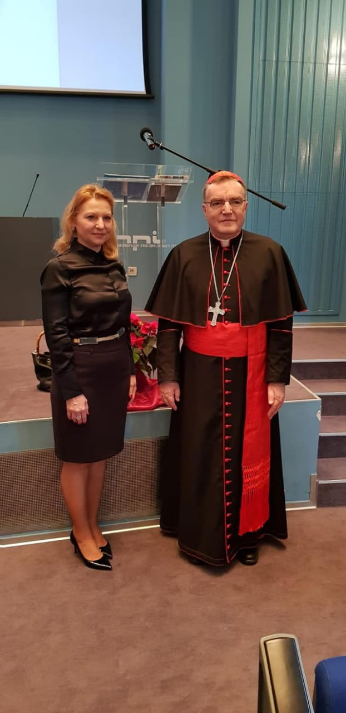

100: Continue Karlo Veliki vodi križarske ratove.
101: Switching Protocols Jazik je staroslavenski za država.
102: Processing Dakle koji je zaključak ove konkluzije?
103: Early hints Osjećam se pomalo autistično...
200: OK Ove ocjene ćemo ocijeniti.
201: Created 'Djeca' nije zbirna imenica.
202: Accepted Čovjek je najinteligentnije ljudsko biće.
203: Non-authoritative Information Argumentiranje je citiranje.
204: No Content Kako bi se reklo na grčkom, tabula rasa.
206: Partial Content Zlatni rez je 1:1
300: Multiple Choices Danas se svi oblačimo isto, za razliku od srednjeg vijeka.
301: Moved Permanently Starenjem ljudi oružne, ali i stare.
302: Found Pronađi u lektiri gdje vidimo Wertherovo najdraže jelo.
303: See Other Karlo Veliki je bio car Svetog Rimskog Carstva.
304: Not Modified Nije ovo škola za djecu s posebnim potrebama.
305: Use Proxy Bašćanska ploča je napisana na dan svetog Nikole.
306: Switch Proxy Pokušavam živjeti poput Petra Hektorovića.
307: Temporary Redirect Mogla sam pozvati tetu s porte, pa joj ti šapći...
308: Permanent Redirect Drinopolje je Carigrad.
400: Bad Request Je li to šah mat ili mat?
401: Unauthorized Zvonimir je prvi kralj jer je pričao s papom.

402: Payment Required Svaka normalna zemlja plaća zdravstveno osiguranje.
403: Forbidden Ne možemo kao u vrtiću en-ten-tini te glasovne promjene!
404: Not Found Prirodnih bisera vise nema, njima treba tisuće godina da nastanu.
405: Method Not Allowed Vid glagolskih pridjeva je jednina ili množina.
406: Not Acceptable Psi su inteligentni samo jer ih ljudi uče, inače skaću i piške gdje god žele.
407: Proxy Authentication Required Kako se kaže u biologiji: metiljavo, nametnici, peronospore, amebe.
408: Request Timeout Kljucanje je drijemanje.
409: Conflict Ja dnevno pojedem kilogram čokolade - čokolada je u akuzativu.
410: Gone Slonovi su izumrle životinje.
411: Length Required Digitalnu knjigu ne možeš ni staviti u džep, pravu možeš.
412: Precondition Required Glagoljica je bazirana na ćirilici.
413: Payload Too Large Svijet ima četiri kontinenta.
415: Unsupported Media Type Dijalektne riječi nisu istoznačnice, ako ja ne govorim taj dijalekt meni to ništa ne znači!
416: Range Not Satisfyable 33 je negativan broj.
417: Expectation Failed Šta, sezona je kiselih krastavaca?
418: I'm a Teapot Majka, mama... To je u stvari mater.
421: Misdirected request Uber pokupi ljude okolo na svojoj ruti.
422: Unprocessable Content Dva i deset je dvadeset.
424: Failed Dependency Iluminacije, to je tehnika crtanja sa sjenama.
425: Too Early Rano ljeto, to je u stvari zima.
426: Upgrade Required Danas koristimo julijanski kalendar, gregorijanski je stariji.
429: Too Many Requests Nećemo dva put čitati, kao da smo u školi za gluhe.
431: Request Header Fields Too Large Portreti su najteži za crtati, zbog proporcija.

450: Blocked By Parental Controls Papa je rimski car.

451: Unavailable For Legal Reasons Ribe dolaze i odlaze slobodnim padom vode u bazen.
500: Internal Server Error Dva futura i dva prezenta, dakle vidimo da prevladava futur.
501: Not Implemented Življenje je sinonim za život.
502: Bad Gateway Boemstvo nije klošarstvo.
503: Service Unavailable Dunav izvire u Švicarskoj.
504: Gateway Timeout Fizičari danas znaju što je vrijeme, put kroz brzina.
506: Variant Also Negotiates Nismo tete na placu da se cjenkamo!
507: Insufficient Storage Dečki... Manje knjiga, više znanja!
508: Loop Detected "Mislim dakle postojim", dakle ako imaš Alzheimera, ne možeš baš više razmišljati.
510: Not Extended Dalek, dalekiji, najdalekiji.

511: Network Authentication Failed Nismo svjesni sebe dok ne progovorimo.

525: SSL Handshake Failed Rimbaud i Verlaine su bili prijatelji.